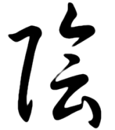
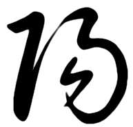

Houten lampen die rust uitstralen
Ambachtelijke lampen van massief hout en Japans papier.

Het uitgangspunt
Licht wordt zacht
door papier
De lampen van OostersLicht worden met de hand gemaakt van hout en Japans papier. Dat traditionele papier filtert het licht: harde stralen komen in balans achter het papieren scherm. Dat komt de sfeer in een vertrek ten goede — en de rust van wie er woont.
De lamp past in een rustig interieur en doet het even goed als lamp om bij te mediteren.
Twee collecties
Oost ontmoet
Nederland
Naast de Japanse collectie is er een reeks lampen die haar vorm ontleent aan De Stijl — dezelfde ambachtelijke opbouw, een heel ander ritme.


In het wild
Inspiratie


Zen
De cirkel is niet gesloten — daar zit de mens in. De ensō in het logo
De zencirkel die de eerste letter van het logo vormt, staat voor heelheid en eenvoud. Maar de cirkel is net niet dicht. Die opening biedt een ontsnapping: je hoeft niet volmaakt te zijn.
De lampen van OostersLicht staan voor diezelfde heelheid en eenvoud — en doen recht aan de opening in de cirkel.


Yin en Yang
Twee krachten,
één evenwicht
Licht en donker, hard en zacht — complementaire krachten die altijd naar balans zoeken. In een snelle, hectische wereld wil OostersLicht een rustpunt zijn. Die rust zit in de zachtheid van het licht door het Japanse papier, in het ambacht en in de eenvoud waarmee de lampen gemaakt zijn.
Lees hoe een lamp ontstaatOp maat gemaakt
Een lamp die past bij jouw ruimte
Elke lamp wordt op bestelling gemaakt. Houtsoort, papier en maat stemmen we af op de plek waar de lamp komt te staan.
Neem contact op